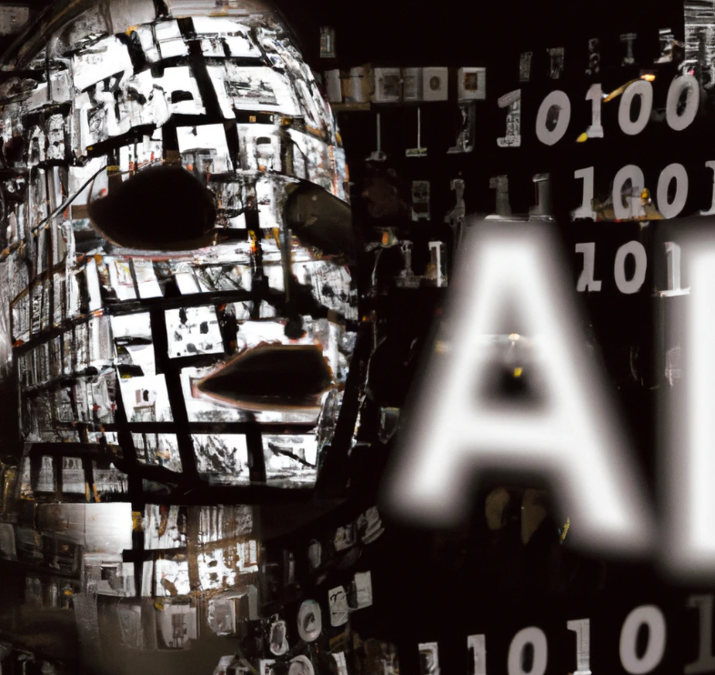

Usos no éticos de la IA
21-02-2023

Desafortunadamente, ha habido varios ejemplos de usos no éticos de la inteligencia artificial (IA) en el pasado y hay preocupaciones sobre posibles usos no éticos en el futuro. A continuación se presentan algunos ejemplos:
Discriminación en la selección de empleados: Algunas empresas han utilizado sistemas de IA para preseleccionar candidatos para puestos de trabajo, pero estos sistemas han demostrado tener sesgos y discriminar a ciertos grupos de candidatos.
Vigilancia masiva: Algunos gobiernos han utilizado sistemas de IA para la vigilancia masiva de la población, lo que puede ser visto como una violación de la privacidad y la libertad individual.
Uso militar: Hay preocupaciones sobre el uso de sistemas de IA en armas autónomas, que pueden tomar decisiones de manera independiente y ser utilizadas en conflictos armados.
Manipulación de la opinión pública: Los sistemas de IA también se han utilizado para manipular la opinión pública y difundir información falsa o sesgada en las redes sociales.
Puntaje social: En algunos países, los sistemas de IA se han utilizado para crear sistemas de "puntaje social", que clasifican a los ciudadanos según su comportamiento y actividades en línea. Estos sistemas pueden limitar las libertades y oportunidades de las personas.
Es importante abordar estos problemas y trabajar para garantizar que la IA se utilice de manera ética y responsable. Esto incluye la regulación de su uso, la transparencia en su desarrollo y su implementación, y la incorporación de la ética en el diseño y desarrollo de los sistemas de IA.
Riesgos de la inteligencia artificial
22-02-2023
A medida que la inteligencia artificial (IA) continúa avanzando, es importante tener en cuenta ciertos aspectos que pueden ser motivo de preocupación o precaución. Algunos de los posibles riesgos de la IA son:
- Pérdida de empleo: La IA puede automatizar tareas y trabajos que antes eran realizados por humanos, lo que podría resultar en una pérdida de empleo en ciertos sectores.
- Sesgo algorítmico: Las IA están diseñadas por humanos y, por lo tanto, pueden incorporar los prejuicios y sesgos de los programadores. Esto puede dar lugar a decisiones sesgadas y discriminatorias.
- Privacidad y seguridad: La IA puede recolectar y procesar grandes cantidades de datos personales, lo que puede representar una amenaza para la privacidad y la seguridad.
- Responsabilidad y ética: A medida que las IA toman decisiones, es importante tener en cuenta quién es responsable de las decisiones que se toman y cómo se garantiza la ética en su uso.
- Riesgos existenciales: Aunque es menos probable, algunos expertos en IA han expresado preocupaciones sobre el potencial de las IA para superar la inteligencia humana y tomar decisiones que pueden ser perjudiciales para la humanidad.
Es importante tener en cuenta que la IA también tiene muchos beneficios potenciales, pero es importante ser conscientes de los posibles riesgos y trabajar para abordarlos de manera responsable y ética a medida que la tecnología continúa avanzando.